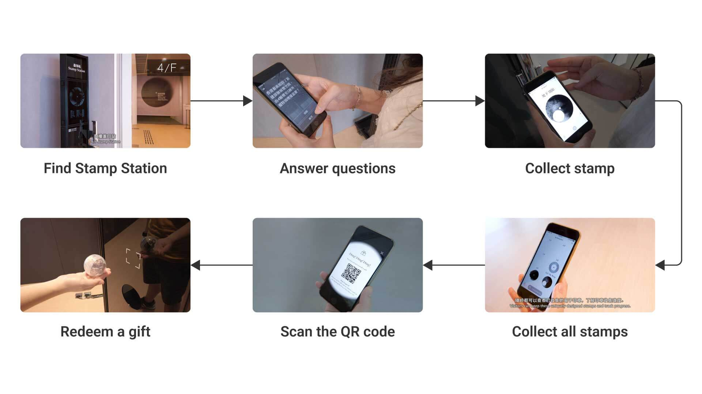
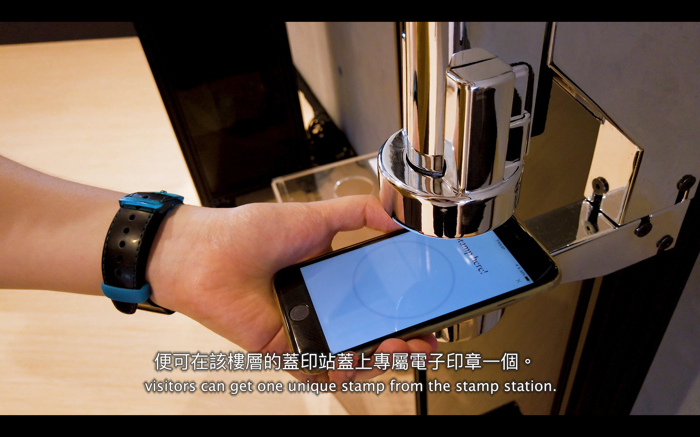
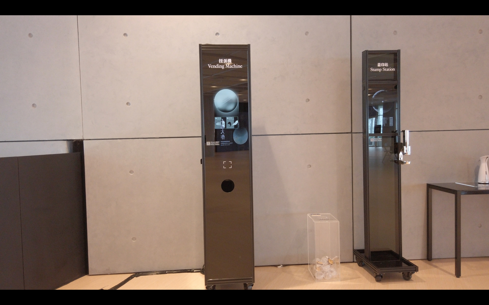

Stamp By Me
A promotional video demonstrating how visitors to the Hong Kong Museum of Art can use a Bluetooth-based app to complete floor challenges and claim prizes.

Overview
“Stamp by Me” was part of the HKMoA Museum Visitor Experience Programme (2019–2020), a joint effort with the Hong Kong Society for Education in Art that offered visitors quick access to museum learning through the HKMoA and Stamp by Me apps.
This video introduces the “Stamp By Me” app, developed by Animae Technologies Limited for the HKMoA. As designer, I filmed and edited the piece so visitors understand how to use the app on site — and how completing the journey unlocks a special gift.
Focus
Explain a location, aware museum experience clearly on camera — floor detection, stamp stations, and the reward loop without disrupting the gallery.
App clarity
Show how Bluetooth / iBeacon detects the floor and guides users through questions to earn stamps.
On-site flow
Capture stamp stations, controllers, and the path from challenge to stamp to gift.
Museum constraints
Work around glass reflections and overexposure while keeping filming short and respectful to visitors.
Storyboard-led edit
Plan shots, angles, and subtitles before filming so the final cut is cohesive and instructional.
Storyboard
Before filming, a detailed storyboard mapped shots, angles, and the subtitles needed for each beat so the final video stays clear and informative.
The app
“Stamp By Me” uses low-power Bluetooth and iBeacon to detect which floor the visitor is on. Users answer floor-specific questions, then collect a unique stamp at the designated station. After all six stamps are collected, they can redeem a gashapon with a special gift from the vending machine.

Photo shooting
On location, each floor’s stamp station was photographed — circular stamps with abstract surfaces on embedded screens. Visitors place their phone on the stamp controller to receive the stamp.


On-site challenges
Large glass walls around the museum caused reflections and overexposure. Angles and timing were chosen carefully for each shot, and filming time was kept short to avoid disturbing other visitors.
Plan
- Storyboard & subtitles
- Shot list by floor
- App demo flow
Shoot
- Stations & controllers
- Manage glass reflections
- Minimal disruption
Edit
- Select takes
- Subtitles & pacing
- Final promo cut
Outcome
A clear promotional film for HKMoA visitors — how to use Stamp By Me from first open to collecting all six stamps and redeeming a gift.